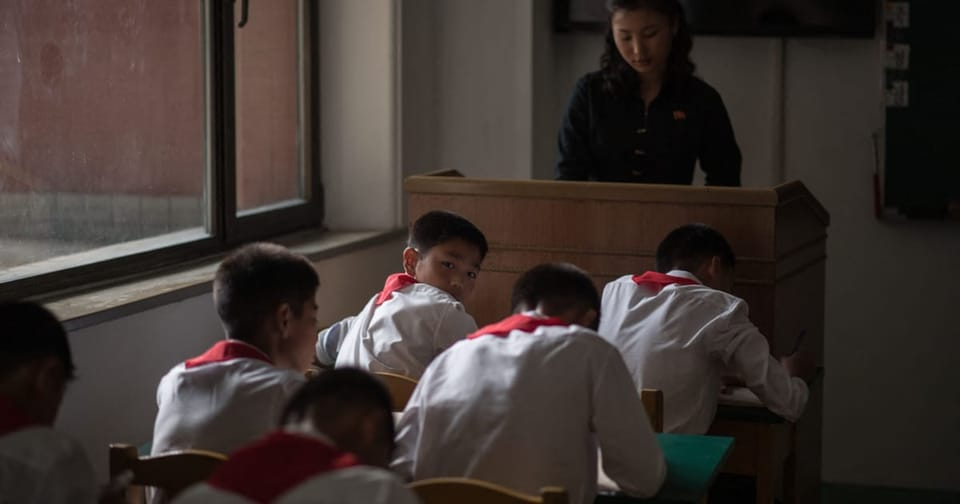

世界苦茶11月28日新闻 | 30条 | 香港宏福苑火灾死亡人数升至128人

香港宏福苑火灾死亡人数升至128人 | 昆明火车站事故致11死2伤 | 六四抗命将军受审视频曝光 | 缅甸大赦政治犯迎接军政府选举 | 字节据称禁用英伟达芯片
苦茶数据
美元兑人民币：7.07（昨日7.07，前日7.07）
美元兑日元：156.32（昨日156.09，前日156.10）
上证指数：3888（昨日3885，前日3879)
标普500指数：休市（昨日6812，前日6765）
比特币：91587（昨日91585，前日87519）
布伦特原油：63.52（昨日62.83，前日62.72）
中国新闻
• 杨丹旭：消防也成反腐重灾区。
中国的反腐风近期吹到了消防领域，各地消防部门接二连三出现官员落马，最近一起案子是涉及云南森林消防总队的窝案。中央纪委国家监委星期二发布消息，云南森林消防总队原中共党委书记、政委张福彦涉嫌严重违纪违法被查，在他落马前，云南森林消防总队已有多人相继落马。这当中有张福彦的老搭档齐兴彬。官方今年6月通报，时任云南森林消防总队党委副书记、总队长齐兴彬涉嫌严重违纪违法，主动投案。据中国媒体报道，张福彦和齐兴彬曾一同参与过丽江玉龙、大理南涧、昆明禄劝、迪庆香格里拉等地的森林火灾扑救工作。发布/2025年11月28日 05:00 中国的反腐风近期吹到了消防领域，各地消防部门接二连三出现官员落马。
• 中韩副外长传下月对话或涉台湾问题。
韩媒星期二报道，两国正在推动12月在北京举行副外长战略对话，对话内容可能涉及台湾问题、韩国核潜艇建造项目。日本首相高市早苗本月初发表“台湾有事”言论，引发中日激烈外交冲突。受访学者认为，韩国将继续保持观望，不会轻易介入中日愈加尖锐的矛盾。中共中央机关报《人民日报》星期二于第三版，刊登韩国新任驻华大使卢载宪的专访。韩联社称，这是时隔六年多中国官媒刊登韩国驻华大使的专访且“规格有所升级”。卢载宪在开篇表示，“韩中友好交往源远流长，现实利益紧密相连，互为重要近邻和合作伙伴”。与此同时，韩联社同日引述多名消息人士称，韩中两国正就韩国外交部副部长朴润柱12月前往北京。
• 昆明一火车站发生试验列车碰撞事故酿11死2伤。
中国云南省昆明市洛羊镇火车站一辆检测地震设备的试验列车，星期四凌晨与进入线路的施工作业人员发生碰撞，造成11人死亡、两人受伤。昆明火车站在官方微博上通报称，这辆试验列车当时是在“正常通过”洛羊镇站内曲线处时，与施工作业人员发生碰撞。通报说，事故发生后，铁路部门立即启动应急预案，与当地政府共同组织开展人员救治和应急救援工作。洛羊镇火车站的运输秩序已恢复正常，事故详细原因正在调查中。根据《潇湘晨报》报道，据初步了解，事故原因为昆明南工务段当天凌晨12时50分至4时在洛羊镇站上下行正线及两端岔区进行换轨施工，在未收到施工调度命令的情况下，作业人员提前上道，导致事故发生。
• 香港宏福苑火灾死亡人数升至94人 学者：港府民望恐受重击。
香港大埔屋苑宏福苑星期三发生五级火警，至星期五已造成至少94人死亡，并仍有逾250人失联，成为当地近80年来最严重的一场火灾。受访学者认为，港府相关部门在事件中涉嫌防火不力，政府民望恐受到重大打击。起火原因目前尚不明朗，但宏福苑外围的维修工程疑似快速助长火势。三名工程公司负责人星期四已因涉嫌误杀被拘捕，包括两名公司董事和一名公司顾问。香港廉政公署星期四宣布，鉴于此事涉及重大公众利益，当天已成立专案小组，对宏福苑维修工程可能存在的贪污行为展开全面调查。中国港澳办主任夏宝龙因应事件组建的工作小组，也于星期四凌晨出发到港。（翻評：現在死亡人數已經升至128人。）
• 欧盟委员会主席冯德莱恩不会与法国总统马克龙一同访华。
欧盟委员会主席冯德莱恩不会随法国总统马克龙一同前往中国与习近平会谈 有消息人士称，欧盟领导人缺席与中国国家主席习近平的会谈，将打破近来的惯例。冯德莱恩去年曾与马克龙一道赴巴黎会见习近平，并在2023年与这位两届中间派法国领导人一同访问北京。在此之前，她的前任让-克洛德·容克在2019年也曾与马克龙及前德国总理安格拉·默克尔一道会见习近平。不过消息人士表示，下周马克龙为期三天、两站的中国行中，将没有任何欧盟领导人出席任何环节，尽管巴黎方面曾提出过这一建议。“因此，总统将代表法国自行处理此事，并将向包括欧盟委员会主席在内的欧洲伙伴汇报，后者不会随同他此次出访。”
• 六四“抗命将军”徐勤先受审视频曝光。
2025年11月27日因在六四事件期间违抗命令、拒绝调兵进入北京镇压学生而被称为“抗命将军”的徐勤先的名字已被很多人遗忘。但他当年在军事法庭受审的录像资料近日流传到互联网。六四运动亲历者和研究者，原中国政法大学教师吴仁华本周在X平台上发布一段时长超过6小时的视频链接，内容为解放军将领徐勤先少将1990年在军事法庭受审的过程。原视频发布在Internet Archive网站。1989年天安门学生运动爆发之际，徐勤先担任解放军38军军长。5月17日，他被上级要求率陆军第三十八集团军入北京执行戒严令，但拒绝执行调兵令。
• 中国因袭击案件“显着”激增，警告民众不要前往日本旅行。
中国对赴日旅行发出警示，称袭击事件“显着”激增，双边关系急剧恶化 大使馆安全提醒指示旅客暂缓行程，随着外交危机加剧 在社交媒体发布的一则安全警示中，大使馆报告称自七月以来寻求援助的请求“显着”增加。“近期，数名在日中国公民反映，他们在没有任何理由的情况下遭到言语侮辱、殴打并受伤，”通告称。北京方面将台湾视为中国的一部分，并表示必要时会以武力实现统一。包括美国和日本在内的大多数国家不承认台湾为独立国家，但华盛顿反对任何以武力夺取这一自治岛屿的企图，并致力于向其提供武器。对于高市早苗的言论，北京反应强烈，屡次提出抗议，称其言论“极其错误且极其危险”
• 华尔街日报：与习近平通话后，特朗普要求日本在台湾问题上“降调”。
据华尔街日报报道，日本首相因台湾问题激怒北京后，对特朗普发出的信息感到担忧。中国领导人习近平非常愤怒，而特朗普则在倾听。日本首相高市早苗在公开表示中国若攻击台湾可能引发东京军事回应，并激怒中国的几天后，据知情人士透露，习近平在与特朗普一小时的通话中，有半个小时都在强调中国对中华民国实际控制下的岛屿的历史主权主张，以及中美共同维持世界秩序的责任。当天晚些时候，特朗普与高市早苗通话，并建议她在台湾主权问题上不要刺激北京。不过日本官员和一名了解通话情况的美国人士透露，特朗普的建议措辞委婉，也没有施压要求高市撤回相关言论。
• 美五角大楼：阿里巴巴百度比亚迪协助中国军方。
美国总统特朗普和中国国家主席习近平会晤达成贸易休战协议前三周，美国五角大楼建议将阿里巴巴、百度和比亚迪纳入协助中国军方的名单。彭博社取得的一份信件显示，美国战争部副部长范伯格于10月7日的信件中，向参议院和众议院的军事委员会提出上述建议。目前尚不清楚这三家企业是否已经正式被纳入所谓的1260H名单。名单虽无直接法律效力，但对美国投资者具有重要警示作用。范伯格说，这三家企业连同另外五家，包括成都新易盛通信技术、华虹半导体、RoboSense速腾聚创、药明康德以及中际旭创，都应被列入1260H名单。
印太新闻
• 缅甸在大赦中释放政治犯。
缅甸大赦释放政治犯 曼谷——周四，作为军方统治者在下月选举前大赦的一部分，被关押在缅甸因辛监狱的家属在获释者抵达时激动相迎。至少八辆装载囚犯的巴士在上午11:30抵达仰光监狱大门外，等待已久的亲友从清晨就守候在此迎接。国营广播机构MRTV周三报道，军方当局对逾3000名因反对军方统治而被拘禁者予以赦免，并撤销了对另外5500多人提起的指控。该赦免旨在确保符合条件的选民能参加12月28日的选举。一位因无权对外发布信息而要求匿名的因辛监狱官员证实，囚犯将从周四开始获释，但未透露人数或具体人选。
• 调查显示，前第一夫人金建希成韩国影子权力中心。
据南华早报，韩国前总统夫人金建希正面临一连串腐败与权钱交易指控，调查人员与分析人士纷纷质问，金建希是否借助她与总统之间的关系，插手人事任命和刑事调查——包括针对她本人的案件，甚至可能影响尹锡悦实施戒严的决策。最新曝光的信息，描绘出一个扭曲韩国正常指挥体系、模糊公私界限的“影子权力中心”。检方已掌握证据，显示金建希在去年干预并叫停了对其腐败案件的调查。2023年，她还收受来自当时执政的国民力量党领导人之妻的一只法国奢侈品牌手袋，价值260万韩元。“长期以来，人们就怀疑金建希的行为举止宛如权力顶点。”韩国木浦大学政治学教授河相福在接受《亚洲周刊》采访时表示。
• 日本严查外国人医疗欠费，超1万日元或被拒入境。
日本严查外国人医疗欠费，超1万日元或被拒入境 2025/11/27 日本关西国际机场设置的办理入境手续的新终端 日本政府将针对访日外国游客的医疗费用欠费问题收紧管控措施。自2026年度起，日本政府拟调整入境审查时反映的医疗欠费标准，由现行的「20万日元以上」降至「1万日元以上」。还将扩大录入资料库的外国人范围，以防范欠费行为的发生。日本政府已向研讨外国人相关政策的自民党外国人政策本部提交了这一方针。当前存在部分访日外国人在日期间突发疾病或遭遇意外伤害，在医疗机构接受诊疗后却拒不支付医疗费用的情况。
科技新闻
• 字节跳动据报被令禁用英伟达晶片。
美国科技媒体报道，中国科技巨企字节跳动被令在新数据中心禁用美国企业英伟达的晶片。The Information星期三引述两名字节跳动员工称，中国监管机构向字节跳动提出上述禁令。据报道，因为担心华盛顿可能进一步限缩晶片供应，字节跳动今年购买的英伟达晶片数量超过任何中企，以便为超过10亿的用户储备足够算力。在美国持续收紧先进半导体输华措施的背景下，这项禁令凸显北京致力于降低中企对美国科技的依赖。彭博社8月引述接近中国科技监管部门的知情人士称，中国官方要求本土企业暂停向英伟达订购新晶片，鼓励企业采用国产处理器。
• 研究发现AI已经可以取代美国11.7%劳动力。
麻省理工学院 (MIT) 周三发布的一项研究显示，人工智能已经能够替代美国劳动力市场的 11.7%，这相当于金融、医疗保健及专业服务领域最多1.2万亿美元的工资规模。这项研究使用了一种名为 “冰山指数” 的劳动力模拟工具，由MIT与橡树岭国家实验室(ORNL)共同开发。冰山指数可模拟全美1.51亿名劳动者之间的互动方式，并评估他们会如何受到人工智能以及相关政策的影响。对于正在筹划数十亿美元再培训与技能提升投资的美国立法者而言，冰山指数提供了一张详细的地图，指出哪些地区正出现潜在的结构性冲击，细致程度甚至精确到邮政编码。
经济新闻
• 万科首次寻求延期偿还即将到期的债券。
2025年11月27日中国国有房地产开发商万科宣布12月10日召开债券持有人会议，商讨延期偿还12月15日到期的20亿元人民币的境内债券。消息一出，万科债券股价大跌。万科企业股份有限公司周三晚间发布的公告显示，该公司将寻求债券持有人批准，延期偿还20亿元人民币的境内债券。这一动向引发金融和房地产市场新一轮担忧。万科是国有房地产开发商，在全国各大城市拥有项目，此次债券延期也是万科首次公开延期。路透社写道，万科的债务重组规模高达3643亿元人民币，加上计息负债，可能远超恒大和碧桂园等民营同行的违约规模。
• 特朗普团队希望台湾培训美国芯片厂工人。
据五名知情人士透露，美国政府正在谈判一项协议，该协议可能要求台湾在半导体制造及其他先进产业领域对美国进行新投资并培训美国工人。根据该安排，包括全球最大代工芯片制造商台积电在内的台湾企业将投入新资本和工人以扩大其美国业务，并培训美国工人。台湾对美国出口目前需缴纳20%关税，作为与华盛顿整体协议的一部分，台湾一直进行谈判以降低该税率。对各种高科技产品至关重要的半导体，在美国建设国内产能期间目前免征关税。其中一位知情人士表示，台湾的承诺投资规模将低于区域的其他竞争对手，但将包括利用台湾专业知识帮助华盛顿建设科学园区基础设施的支持。
• 价格战与关税：中国工业利润结束连涨势头。
中国10月工业利润下滑，价格战加剧。官方周四公布的按年数据表明，继9月回升后，10月工业利润出现下降，分析人士指出国内竞争和贸易紧张正压缩企业资产负债表。该局称，1至10月规模以上企业实现的利润同比增长1.9%，低于前九个月3.2%的增速。制造业利润在1至10月增长7.7%，电力、热力、燃气和水供应等行业收益增长9.5%。与此同时，采矿业利润同比下降27.8%。该局表示，上月利润回落部分原因是基数较高效应以及财务费用快速增长。复旦大学金融学教授查尔斯·张表示，中国节假日消费激增的周期性暂停，加上美国支出预计放缓——尽管存在贸易战，美国仍是中国重要出口市场——也可能使10月利润受冷。
• 欧盟高级官员指控美国在贸易谈判中进行“敲诈”。
“敲诈勒索”手段胁迫欧盟削弱其科技规则。美国商务部长霍华德·卢特尼克周一在布鲁塞尔表示，如果欧盟重新考虑其数字规则，美国可以调整对钢铁和铝材的关税做法。欧洲官员将他的言论解读为针对欧盟的旗舰科技法规，包括《数字市场法》。西班牙专员在周三接受POLITICO采访时表示：“这是敲诈。”“有这种意图并不意味着我们会接受这种敲诈。
• 娃哈哈进入“后宗时代” 宗馥莉卸任核心职务。
企查查工商信息显示，杭州娃哈哈集团有限公司近日完成核心人事变更，宗馥莉正式卸任法定代表人、董事长及总经理职务，由许思敏全面接任。同时，公司多位主要人员发生变更，王国祥卸任董事、副总经理，包民霞出任董事、财务负责人。资料显示，许思敏毕业于浙江大学法学专业，2015年创办中西快餐品牌 “原牛道”。创业遇挫后，他入职宏胜集团法务部，因处理娃哈哈与达能商标权纠纷等重要案件表现突出，逐步升任法务部部长。2024年8月 宗馥莉接班后，许思敏开始进入娃哈哈权力核心，次年10月接任总经理职务，11月18日首次以总经理身份在娃哈哈集团销售会议公开亮相。
俄乌战争
• 普京在莫斯科与美国会谈前加倍坚持对乌克兰领土的要求。
普京在与美国即将在莫斯科举行会谈前重申对乌克兰领土的要求 普京总统再次重申了结束乌克兰战争的核心条件，称俄罗斯只有在基辅部队从被莫斯科主张的领土撤出后才会放下武器。普京长期以来一直推动对俄罗斯以武力夺取的乌克兰领土给予法律承认，其中包括2014年被吞并的南部克里米亚半岛，以及现在大部分被莫斯科占领的东部顿巴斯地区。对于已明确拒绝放弃仍由自己控制的顿巴斯部分的基辅来说，以割让土地来奖励俄罗斯的侵略是不可接受的。普京发表讲话后，乌克兰总统弗拉基米尔·泽连斯基表示，俄罗斯“蔑视”了“真正结束战争”的努力。在吉尔吉斯斯坦之行中对记者表示。
• 朝鲜在学校将俄语列为必修课。
朝鲜从四年级起在学校开设俄语为必修科目。俄联邦自然资源与环境部长、俄朝政府间委员会共同主席亚历山大·科兹洛夫在莫斯科举行的委员会会议上表示，目前朝鲜约有600人在学习俄语，这使其成为该国三大最受欢迎的语言之一。他称在俄罗斯有3000名中小学生和300名大学生学习朝鲜语。
• 卢比奥告诉盟友，美国将在和平协议签署后讨论对乌克兰的安全保障。
据Politico于11月27日援引知情人士报道，美国国务卿马可·鲁比奥告诉欧洲盟友，在签署和平协议后美方将讨论对乌克兰的长期安全保障。乌克兰官员表示，任何和解必须包括有约束力的安全保障，以防俄罗斯在停火或战争正式结束后发动新一轮进攻。据Politico报道，鲁比奥在11月25日的通话中向盟友保证，美国总统唐纳德·特朗普计划在达成协议后着手处理安全保障问题。一位欧洲外交官称，鲁比奥还提到了预计在协议后处理的未解决问题，欧盟外交官认为这些问题包括乌克兰的领土完整以及被冻结的俄罗斯资产的命运。
• 卢特表示，俄罗斯对乌克兰是否能加入北约没有发言权。
北约秘书长马克·吕特11月26日表示，乌克兰加入北约取决于成员国的一致同意——而不是俄罗斯的要求。“俄罗斯无权对谁能成为北约成员发表意见或行使否决权，”吕特对西班牙媒体《国家报》说。“但在联盟内部，入盟需要一致通过，”并补充说包括美国在内的若干北约盟国反对基辅入盟。吕特的言论正值一周紧张外交活动之中，此前美国以一项备受争议的28点计划重启了和平谈判，该计划被广泛视为有利于俄罗斯。经过与乌克兰和欧洲伙伴的磋商，该提案此后已有所删减，但据报道原版条款包括禁止乌克兰的北约愿望——实质上确立了俄罗斯对乌克兰入盟的否决权。莫斯科长期声称北约扩张将其逼入战争，尽管乌克兰并非北约成员。
• 欧洲开始考虑那曾被视为不可想象的事：对俄罗斯进行报复。
俄罗斯的无人机和特工正在对北约国家发动袭击，欧洲现在正在做几年前看来不可思议的事：筹划如何反击。两名欧洲高级政府官员与三名欧盟外交官表示，构想包括针对俄罗斯的联合进攻性网络行动、更快速且更协调地对混合攻击进行归因并迅速指向莫斯科，以及突袭性的北约主导军事演习。拉脱维亚外长拜巴·布拉热在接受采访时指出：“俄罗斯人不断在试探底线——我们的反应是什么，我们能走多远？”她对POLITICO表示，“需要更‘积极主动的回应’。发声不是发出信号的方式——是行动。
世界新闻
• 法国在取消征兵制25年后将引入一种形式的兵役。
法国将在征兵制废止25多年后引入一种形式的兵役，以应对对与俄罗斯发生冲突日益增长的担忧。一种有限形式的兵役将被重新推出，年轻男女可自愿参加为期10个月的有薪军事训练。“避免危险的唯一办法是为之做准备，”总统埃马纽埃尔·马克龙在法国东南部格勒诺布尔附近的一处步兵基地宣布该计划时说。
• 英国政府欢迎净迁移人数大幅下降，但表示仍需采取更多措施。
英国政府周四对一项数据显示，截止到2025年6月的一年内，英国净迁移人数下降超过三分之二表示欢迎，但同时强调，为缓解社区内部紧张局势，这一数字还需进一步下降。英国国家统计局表示，截止2025年6月的一年内，净迁移人数下降69%，降至20.4万，创四年新低；上一年同期为64.9万。主要原因是来自欧盟以外国家以工作或学习为目的的入境人数减少，以及更多人迁出英国。英国政府希望这一大幅下降能帮助缓和今年在政治议程上升温的移民问题。然而，选民关切主要集中在非法移民上。
• 无人机袭击伊拉克北部一处天然气田引发大范围停电。
一次无人机袭击迫使伊拉克北部一处天然气田完全停产，导致北部地区大范围断电，并引发伊拉克、库尔德和美国官员的紧急谴责。伊拉克当局称，这起发生在周三深夜的袭击是本周内的第二次，导致气田一处主要设施起火，但未造成人员伤亡。位于库尔德斯坦地区的科尔莫尔是伊拉克北部产量最高的天然气田之一，其产气用于为发电厂供能。伊拉克联合作战指挥部表示，袭击发生在周三约晚上11:30，一枚爆炸装置击中位于苏莱曼尼亚省的气田一处主要设施，引发火灾。联合作战指挥部在声明中称，这次袭击是“懦弱的”“严重的恐怖行为”。
• 欧洲议会文本未将苏丹战争暴行归咎于阿联酋。
本周，随着欧洲议会准备就一项谴责苏丹内战中持续暴行的决议进行投票，阿联酋在斯特拉斯堡展开了游说攻势。阿联酋代表团与多位关键欧洲议会议员会面，坚称阿联酋在苏丹发挥着建设性作用，尽管有指控称阿布扎比积极支持快速支援部队——这一臭名昭著的民兵组织被牵涉到种族屠杀和性暴力。议会最终在周四下午通过了一项谴责苏丹毁灭性内战的决议，但并未提及对阿联酋涉嫌干预冲突的指控。
• 国民警卫队枪击事件后，美国暂停受理阿富汗人的移民申请。
一名阿富汗男子被指认是此次枪击事件的嫌疑人。美国公民及移民服务局表示，此决定是在对“安全与审查程序”进行审查期间作出的。周三的枪击事件造成两名国民警卫队成员重伤，嫌疑人据称于2021年9月从阿富汗抵达美国。美国总统唐纳德·特朗普称这起袭击是“一起恐怖行为”，并表示将采取措施将“不属于这里的任何国家的外国人”驱逐出境。在前总统乔·拜登领导下美军混乱撤离阿富汗后，数万名阿富汗人以特殊移民保护身份进入美国。国土安全部在一份新闻稿中将嫌疑人名为拉赫马努拉·拉坎瓦尔，称其为“一名来自阿富汗的刑事外国人”。
• 因与美国紧张局势升级，委内瑞拉禁止六家主要航空公司。
委内瑞拉已禁止六家主要国际航空公司在该国降落，此前这些航空公司未能在48小时期限内恢复飞往该国的航线。因美国警告该地区存在“升高的军事活动”，这些航空公司曾暂时中止飞往首都加拉加斯的航班。对此愤怒的委内瑞拉政府向这些航空公司发出最后通牒，通牒已于周三到期。尽管一些小型航空公司仍继续飞往委内瑞拉，但已有数千名乘客受到影响。美国已向委内瑞拉近海部署大量兵力，美国称此举是为打击贩毒，但委内瑞拉领导人谴责这是推翻其政权的企图。委内瑞拉民航局周三宣布，即刻取消伊比利亚航空，葡萄牙航空，戈伦航空，拉塔姆航空。